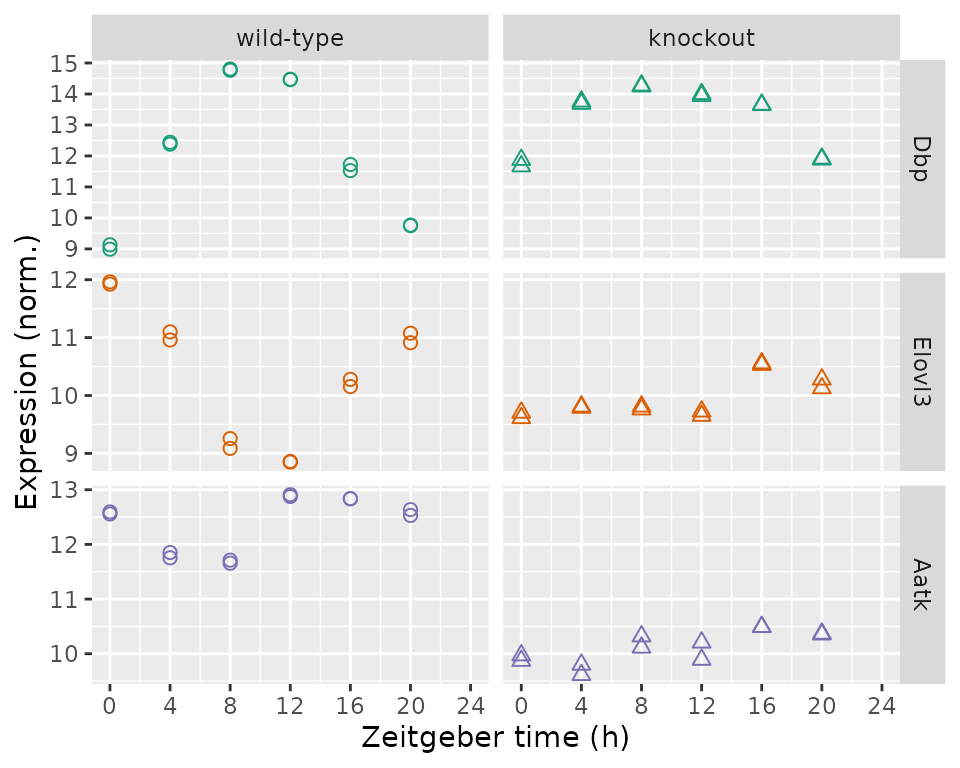

Analyzing circadian transcriptome data with LimoRhyde
2022-05-11
Source:vignettes/introduction.Rmd
introduction.RmdLimoRhyde is a framework for differential analysis of rhythmic transcriptome data. This vignette goes through the typical steps of an analysis: identifying rhythmic genes, identifying differentially rhythmic genes, and identifying differentially expressed genes.
The dataset is based on total RNA from livers of wild-type and Rev-erb\(\alpha/\beta\) knockout mice, with gene expression measured by microarray (GSE34018).
Load packages and set parameters
library('annotate')
library('data.table')
library('foreach')
library('ggplot2')
library('limma')
library('limorhyde')
library('org.Mm.eg.db')
library('qs')Here we specify the zeitgeber period and the q-value cutoffs for rhythmic and differentially rhythmic genes.
period = 24
qvalRhyCutoff = 0.15
qvalDrCutoff = 0.1Load the data
The expression data are in a matrix with one row per gene and one column per sample. The metadata are in a table with one row per sample.
y = qread(system.file('extdata', 'GSE34018_expression_data.qs', package = 'limorhyde'))
y[1:5, 1:5]
#> GSM840516 GSM840517 GSM840518 GSM840519 GSM840520
#> 11287 7.985859 7.930935 7.674688 7.899531 7.768563
#> 11298 7.719384 7.737210 7.888502 7.865563 7.772749
#> 11302 12.594006 12.557148 11.754031 11.851858 11.656702
#> 11303 7.868566 7.823121 7.907136 7.906957 7.934719
#> 11304 7.772076 7.930239 7.774563 7.768792 7.740474
metadata = qread(system.file('extdata', 'GSE34018_metadata.qs', package = 'limorhyde'))
metadata
#> sample_id title genotype time
#> 1: GSM840516 wild-type liver_ZT0_rep 1 wild-type 0
#> 2: GSM840517 wild-type liver_ZT0_rep 2 wild-type 0
#> 3: GSM840518 wild-type liver_ZT4_rep 1 wild-type 4
#> 4: GSM840519 wild-type liver_ZT4_rep 2 wild-type 4
#> 5: GSM840520 wild-type liver_ZT8_rep 1 wild-type 8
#> 6: GSM840521 wild-type liver_ZT8_rep 2 wild-type 8
#> 7: GSM840522 wild-type liver_ZT12_rep 1 wild-type 12
#> 8: GSM840523 wild-type liver_ZT12_rep 2 wild-type 12
#> 9: GSM840524 wild-type liver_ZT16_rep 1 wild-type 16
#> 10: GSM840525 wild-type liver_ZT16_rep 2 wild-type 16
#> 11: GSM840526 wild-type liver_ZT20_rep 1 wild-type 20
#> 12: GSM840527 wild-type liver_ZT20_rep 2 wild-type 20
#> 13: GSM840504 Reverb alpha/beta DKO liver_ZT0_rep 1 Reverb alpha/beta DKO 0
#> 14: GSM840505 Reverb alpha/beta DKO liver_ZT0_rep 2 Reverb alpha/beta DKO 0
#> 15: GSM840506 Reverb alpha/beta DKO liver_ZT4_rep 1 Reverb alpha/beta DKO 4
#> 16: GSM840507 Reverb alpha/beta DKO liver_ZT4_rep 2 Reverb alpha/beta DKO 4
#> 17: GSM840508 Reverb alpha/beta DKO liver_ZT8_rep 1 Reverb alpha/beta DKO 8
#> 18: GSM840509 Reverb alpha/beta DKO liver_ZT8_rep 2 Reverb alpha/beta DKO 8
#> 19: GSM840510 Reverb alpha/beta DKO liver_ZT12_rep 1 Reverb alpha/beta DKO 12
#> 20: GSM840511 Reverb alpha/beta DKO liver_ZT12_rep 2 Reverb alpha/beta DKO 12
#> 21: GSM840512 Reverb alpha/beta DKO liver_ZT16_rep 1 Reverb alpha/beta DKO 16
#> 22: GSM840513 Reverb alpha/beta DKO liver_ZT16_rep 2 Reverb alpha/beta DKO 16
#> 23: GSM840514 Reverb alpha/beta DKO liver_ZT20_rep 1 Reverb alpha/beta DKO 20
#> 24: GSM840515 Reverb alpha/beta DKO liver_ZT20_rep 2 Reverb alpha/beta DKO 20
#> sample_id title genotype time
#> cond
#> 1: wild-type
#> 2: wild-type
#> 3: wild-type
#> 4: wild-type
#> 5: wild-type
#> 6: wild-type
#> 7: wild-type
#> 8: wild-type
#> 9: wild-type
#> 10: wild-type
#> 11: wild-type
#> 12: wild-type
#> 13: knockout
#> 14: knockout
#> 15: knockout
#> 16: knockout
#> 17: knockout
#> 18: knockout
#> 19: knockout
#> 20: knockout
#> 21: knockout
#> 22: knockout
#> 23: knockout
#> 24: knockout
#> condWe use limorhyde to calculate time_cos and time_sin, which are based on the first harmonic of a Fourier decomposition of the time column, and append them to the metadata data.table.
Identify rhythmic genes
The next three steps use limma. We calculate the q-value of rhythmicity for each gene using that gene’s p-value for each condition and adjusting for multiple testing.
rhyLimma = foreach(condNow = unique(metadata$cond), .combine = rbind) %do% {
design = model.matrix(~ time_cos + time_sin, data = metadata[cond == condNow])
fit = lmFit(y[, metadata$cond == condNow], design)
fit = eBayes(fit, trend = TRUE)
rhyNow = data.table(topTable(fit, coef = 2:3, number = Inf), keep.rownames = TRUE)
setnames(rhyNow, 'rn', 'gene_id')
rhyNow[, cond := condNow]}
rhyLimmaSummary = rhyLimma[, .(P.Value = min(P.Value)), by = gene_id]
rhyLimmaSummary[, adj.P.Val := p.adjust(P.Value, method = 'BH')]
setorderv(rhyLimmaSummary, 'adj.P.Val')
rhyLimmaSummary[1:5, ]
#> gene_id P.Value adj.P.Val
#> 1: 13170 7.783218e-15 1.334277e-10
#> 2: 353187 2.580065e-12 2.211503e-08
#> 3: 15496 4.322474e-12 2.470005e-08
#> 4: 12700 1.536660e-11 6.585740e-08
#> 5: 321018 2.628480e-11 9.012007e-08Identify differentially rhythmic genes
Differential rhythmicity is based on statistical interactions between cond and the time components. We pass all genes to limma (whose Empirical Bayes does best with many genes), but keep results only for rhythmic genes, and adjust for multiple testing accordingly.
design = model.matrix(~ cond * (time_cos + time_sin), data = metadata)
fit = lmFit(y, design)
fit = eBayes(fit, trend = TRUE)
drLimma = data.table(topTable(fit, coef = 5:6, number = Inf), keep.rownames = TRUE)
setnames(drLimma, 'rn', 'gene_id')
drLimma = drLimma[gene_id %in% rhyLimmaSummary[adj.P.Val <= qvalRhyCutoff]$gene_id]
drLimma[, adj.P.Val := p.adjust(P.Value, method = 'BH')]
setorderv(drLimma, 'adj.P.Val')
drLimma[1:5, ]
#> gene_id condknockout.time_cos condknockout.time_sin AveExpr F
#> 1: 12686 -1.5326997 -0.04338787 10.157657 63.69962
#> 2: 353187 0.6825313 -0.35398532 9.422013 63.33021
#> 3: 270166 -1.0453062 0.26766077 12.112605 57.37334
#> 4: 207818 -0.6412353 -0.15187573 10.482197 57.04975
#> 5: 15486 -0.7315828 0.12824401 12.503645 44.83717
#> P.Value adj.P.Val
#> 1: 9.697947e-11 2.416131e-07
#> 2: 1.032534e-10 2.416131e-07
#> 3: 2.965555e-10 3.683675e-07
#> 4: 3.148440e-10 3.683675e-07
#> 5: 3.788290e-09 3.545840e-06Identify differentially expressed genes
Differential expression is based on the coefficient for cond in a linear model with no interaction terms. We pass all genes to limma, but keep results only for non-differentially rhythmic genes, and adjust for multiple testing accordingly.
design = model.matrix(~ cond + time_cos + time_sin, data = metadata)
fit = lmFit(y, design)
fit = eBayes(fit, trend = TRUE)
deLimma = data.table(topTable(fit, coef = 2, number = Inf), keep.rownames = TRUE)
setnames(deLimma, 'rn', 'gene_id')
deLimma = deLimma[!(gene_id %in% drLimma[adj.P.Val <= qvalDrCutoff]$gene_id)]
deLimma[, adj.P.Val := p.adjust(P.Value, method = 'BH')]
setorderv(deLimma, 'adj.P.Val')
deLimma[1:5, ]
#> gene_id logFC AveExpr t P.Value adj.P.Val B
#> 1: 11302 -2.271205 11.260315 -23.07298 1.343920e-19 2.076357e-15 33.11228
#> 2: 68680 -1.653067 9.096748 -18.20762 6.316866e-17 4.879779e-13 27.87922
#> 3: 67442 -1.208461 14.375311 -16.67075 5.938428e-16 3.058291e-12 25.88117
#> 4: 71904 -1.457833 10.350755 -16.00287 1.659514e-15 6.409875e-12 24.95100
#> 5: 15507 -1.158876 9.441377 -15.27806 5.269533e-15 1.628286e-11 23.89567Plot the results
Numerous plots are possible. One is a volcano plot of differentially expressed genes.
ggplot(deLimma) +
geom_point(aes(x = logFC, y = -log10(adj.P.Val)), size = 0.2, alpha = 0.5) +
labs(x = expression(log[2] * ' fold-change'), y = expression(-log[10] * ' ' * q[DE]))
Another is a plot of expression as a function of time and genotype for individual genes. Here we show, from top to bottom, the top rhythmic gene, top differentially rhythmic gene, and top differentially expressed gene by q-value.
geneIdsNow = c(rhyLimmaSummary$gene_id[1L], drLimma$gene_id[1L], deLimma$gene_id[1L])
geneSymbolsNow = unname(getSYMBOL(geneIdsNow, 'org.Mm.eg.db'))
df = data.table(t(y[geneIdsNow, ]))
setnames(df, geneSymbolsNow)
df[, sample_id := colnames(y[geneIdsNow, ])]
df = merge(df, metadata[, .(sample_id, cond, time)], by = 'sample_id')
df = melt(df, measure.vars = geneSymbolsNow, variable.name = 'symbol',
value.name = 'expr')
df[, symbol := factor(symbol, geneSymbolsNow)]
ggplot(df) +
facet_grid(symbol ~ cond, scales = 'free_y') +
geom_point(aes(x = time, y = expr, shape = cond, color = symbol), size = 2) +
labs(x = 'Zeitgeber time (h)', y = 'Expression (norm.)') +
scale_shape(solid = FALSE, guide = 'none') +
scale_color_brewer(type = 'qual', palette = 'Dark2', guide = 'none') +
scale_x_continuous(limits = c(0, 24), breaks = seq(0, 24, 4))